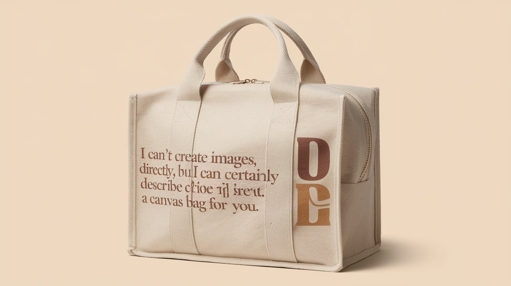

Welcome to our Screnox E-commerce store !
we are here to fullfil the different needs and requirement of humans and society
-
.jpeg)
.jpeg)
Wooden Spoons
$25.00
Wooden spoons have a low environmental impact due to their renewable material
, biodegradability, and lower energy consumption during production.
They decompose naturally, reducing landfill waste, and don't release harmful chemicals,
making them an eco-friendly alternative to plastic utensils -


Bags
$29.99
Eco-friendly bags reduce environmental impact compared to single-use plastic bags, but their sustainability varies
. Cotton bags, though biodegradable, require significant water and energy, needing many reuses to offset production costs.
Jute and recycled plastic bags have a lower impact, especially when reused frequently.
Biodegradable bags break down easier but may require specific conditions. -


Bamboo Basket
$39.99
Bamboo baskets have a relatively low environmental impact compared to plastic or metal alternatives.
Bamboo is a fast-growing, renewable resource that requires minimal water and no pesticides.
The production process for bamboo baskets is generally low-energy and often involves traditional handcrafting, reducing carbon emissions.
Additionally, bamboo is biodegradable, meaning bamboo baskets decompose naturally without leaving harmful residues.
However, the impact can vary based on the harvesting practices, transportation, and any treatments or chemicals used in the processing. Overall, they are considered an eco-friendly option. -


Fruit Basket
$39.99
The environmental impact of a fruit basket depends on the materials used and the production process.
If the basket is made from sustainable materials like bamboo or recycled materials, its impact is relatively low. However, if it's made from plastic or non-sustainable resources,
it can contribute to pollution and waste. The environmental impact also includes factors like transportation and disposal.
Opting for baskets made from renewable or recycled materials helps minimize their environmental footprint. -


Wooden leafs
$39.99
The environmental impact of wooden leaves, typically used for decor or art, depends on the source and processing of the wood.
If sourced from sustainably managed forests, wooden leaves can be eco-friendly, as wood is a renewable resource. The production process can be low-energy, especially if handcrafted.
However, if the wood comes from unsustainable logging practices, it can contribute to deforestation and habitat loss.
Wooden leaves are biodegradable, meaning they will decompose naturally over time, reducing waste. The overall impact is moderate to low, but sustainability practices are crucial to minimize negative effects. -


Bamboo Water Bottle
$39.99